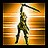

Gold Farming, Zaishen & Solo Progression Tricks
Max runes, Superior Vigor, 40/40 weapon sets, and Hero Armor skins quickly exceed the gold earned from story quests alone. These eight reliable weekly, daily, and repeatable solo farms fund an entire 7-Hero Mesmerway squad without fighting competitive spawns or burning out.
Zero-Gear Weekly & Daily Account Income 0/0 (0%)
-
Weekly Nicholas the Traveler (5 Gifts of the Traveler / Week): Every Monday at 15:00 UTC, Nicholas the Traveler moves to a new explorable zone across Tyria, Cantha, Elona, or the Far Shiverpeaks and trades 5 Gifts of the Traveler per account for sets of common monster trophies. Selling unopened Gifts to players in Kamadan is the single highest gold-per-hour source available to a brand-new player (easily funding multiple max armor sets every week). Use
/wiki Nicholas the Travelerin chat to check his exact current spot and drop item. -
Daily Zaishen Challenge Quests (16:00 UTC Reset): Visit Embark Beach or the Great Temple of Balthazar to grab daily Zaishen Mission, Zaishen Bounty, and Zaishen Vanquish quests (up to three of each type stack in your Quest Log simultaneously). Turning quests in to Zehnchu grants raw gold, faction points, and Zaishen Coins redeemable for Heavy Equipment Packs (20-slot inventory bags) and extra storage panes.
-
Auspicious Beginnings (Repeatable 1,000g + 5 War Supplies): Unlocked after completing Eye of the North's main storyline and starting Hearts of the North via the Hall of Monuments Scrying Pool. Equip Keiran's Bow, enter Watchtower Coast solo as Keiran alongside Miku, fire Sniper Shot at her marked targets down the road, and finish in roughly three minutes per 1,000g + Vanguard points + 5 War Supplies run without relying on Hero runes.
High-Yield Repeatable Solo Farms (With Verified Templates)
-
Jaga Moraine Vaettir Farm (A/Me – 60 Mobs Every 2 Minutes): Exit Longeye's Ledge into Bjora Marches, zone northwest into Jaga Moraine (Hard Mode once unlocked, or Normal Mode to practice), trigger Deadly Paradox + Shadow Form + Shroud of Distress, pull all three massive Shadow/Mist Vaettir clusters along the hill back toward the rock notch, keep Channeling up, and tab-target Arcane Echo → Wastrel's Demise across every balled Vaettir for gold weapons, Glacial Stones, Skill Tomes, and seasonal festival drops.OwVUI2h5lPP8Id2BEAAAWC3UTA
-
Riven Earth Raptor Farm (W/N or D/N – Rata Sum Caves): Leave Rata Sum eastward into Riven Earth with one Paragon Hero parked at the portal bearing Vocal Was Sogolon + "Fall Back!" for speed. Pull all 32 Cave Raptors plus Rekoff Broodmother into the stone wall, trigger

"I Am Unstoppable!" + Protector's Defense + Wary Stance + Mark of Pain, and cleave the pack down with Hundred Blades + Whirlwind Attack. Farms Asura reputation, Boss greens, gold drops, and event drops fast.OQQTcUqWXimUlJvwSovYUbHEAAOgSkcoq06ymEmI31326V2lYolQzF -
Jaya Bluffs Sensali Feather Farm (Any/Rt – Works on Any Profession): Head south out of Seitung Harbor (or east from Zen Daijun) into Jaya Bluffs in Factions. Run Ritualist Secondary using Generous Was Tsungrai, Vengeful Was Khanhei, Spirit Rift, Ancestors' Rage, and Light of Deldrimor to nuke clustered Sensali Tengu cleanly on any class (below is the Ritualist base version; adjust primary header for other classes), stockpiling Feathers and Iron for crafting consumables.OACiEyiMBAQwYx444NRKCAAAA
Safe Legendary Survivor XP & Hero Armor Upgrades
-
Kilroy Stonekin's Punch-Out Extravaganza! (Safe Survivor XP): After clearing Norn brawling quests in Gunnar's Hold, speak with Kilroy Stonekin to run Fronis Irontoe's Lair solo. Your skill bar swaps temporarily to fixed Brawling punches (2,500 XP + 250g per clear plus Norn rank and chests), and using STAND UP! prevents real death, letting any character safely grind toward the 1,337,500 XP Legendary Survivor title even after dying earlier in the campaign.
-
Hero Armor Upgrades (Glint's Challenge & Remains of Sahlahja): Unlock cosmetic Hero armors cleanly without expensive marketplace buys: run Glint's Challenge from Consular Brand Oakencask in Central Transfer Chamber (guarantees 1 Cloth of the Brotherhood + Destroyer Core per clear for Gwen/Vekk/Ogden/Xandra Brotherhood outfits), and run Remains of Sahlahja or Dajkah Inlet Challenge Missions in Elona for Ancient Armor Remnants and Mysterious Armor Pieces (upgrade skins for Master of Whispers, Norgu, and Olias).